# 設定檔案路徑
file_path <- "C:/Users/USER/Desktop/quarto/quarto_website/UTD_SDAR/TWBC2021.csv"
# 讀取 CSV 檔案
TWBC2021 <- read.csv(file_path)
# 檢視資料表格
View(TWBC2021)Assignment 5
1. Using sample datasets or own data, create the following charts using only R graphics
functions (i.e. without using any other packages). Be sure you customize the chart with your own style/theme (e.g. font, color, pch, etc.)
a. Histogram
# Histogram
par(col="gray50", fg="gray30", col.axis="gray50")
hist(TWBC2021$A_Age, breaks = 10,
col = "gray80", freq = FALSE,
main = "Histogram of Averge Incidence Age of\n Female Breast Cancer with Normal Distribution",
xlab = "Averge Incidence Age",
cex.lab = 1.2)
mean_hpi <- mean(TWBC2021$A_Age, na.rm = TRUE)
sd_hpi <- sd(TWBC2021$A_Age, na.rm = TRUE)
x <- seq(min(TWBC2021$A_Age, na.rm = TRUE), max(TWBC2021$A_Age, na.rm = TRUE), length = 100)
dn <- dnorm(x, mean = mean_hpi, sd = sd_hpi)
lines(x, dn, col = "red", lwd = 2)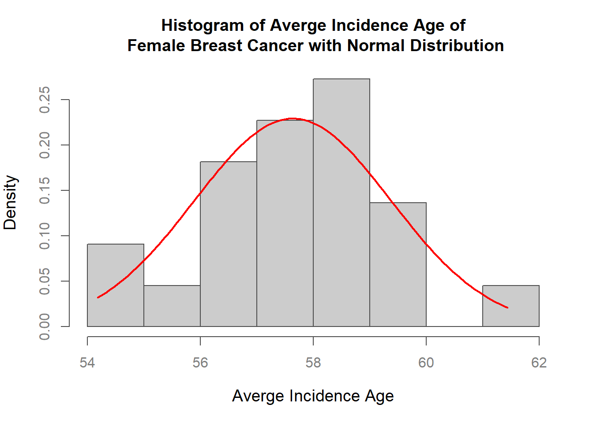
par(mar=c(5.1, 4.1, 4.1, 2.1), col="black", fg="black", col.axis="black")b. Barchart
i. Vertical
# Barchart(Vertical)
sorted_data <- TWBC2021[order(TWBC2021$N_Incidence), ]
par(mar=c(6, 5.5, 3, 2))
barplot(
sorted_data$N_Incidence,
names.arg = sorted_data$City,
las = 2, # X軸標籤旋轉
col = "lightblue", # 條形顏色
main = "Number of Incidence by City/County",
ylab = "Number of Incidence",
ylim = c(0, 3000),
cex.names = 0.6,
cex.lab = 0.8, # 調整Y軸標籤（ylab）的字體大小
cex.axis = 0.7
)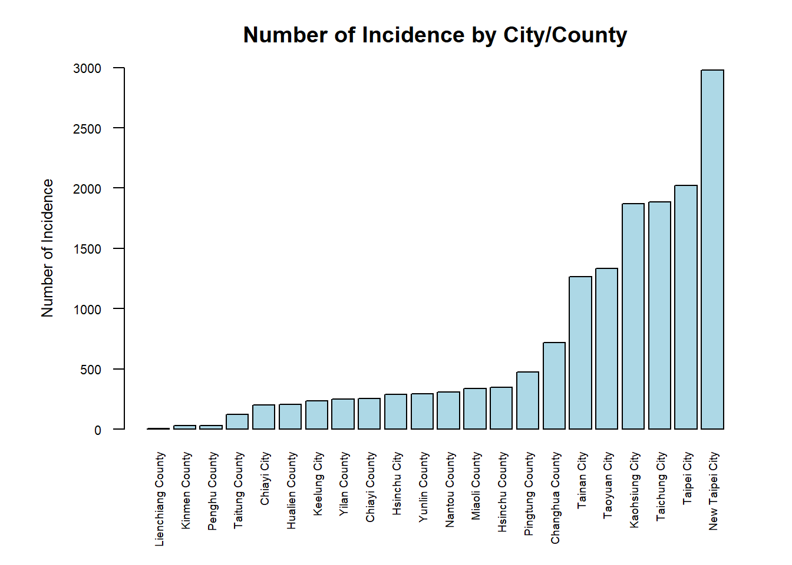
par(mar=c(5.1, 4.1, 4.1, 2.1), col="black", fg="black", col.axis="black")ii. Horizonal
# Barchart(Horizonal)
par(mar=c(4.5, 6, 3, 2.1))
barplot(
sorted_data$N_Incidence,
names.arg = sorted_data$City,
las = 1, # X軸標籤旋轉
col = "lightblue", # 條形顏色
main = "Number of Incidence by City/County",
xlab = "Number of Incidence", # X軸標籤改為表示 N_Incidence
horiz = TRUE, # 設置條形圖為橫向
cex.names = 0.55,
cex.lab = 0.8, # 調整X軸標籤（xlab）的字體大小
cex.axis = 0.7,
xlim = c(0, 3000) # 設置X軸範圍
)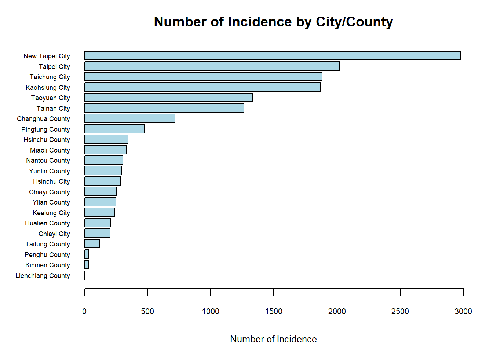
par(mar=c(5.1, 4.1, 4.1, 2.1), col="black", fg="black", col.axis="black")c. Piechart
# Piechart
par(mar=c(1, 1.5, 3, 1.5), lwd=1)
region_counts <- table(TWBC2021$Region)
colors <- c("darkorchid2", "limegreen", "firebrick2", "darkorange2", "royalblue")
pie(region_counts,
labels = paste(names(region_counts)),
main = "Distribution of Regions in the Dataset",
col = colors)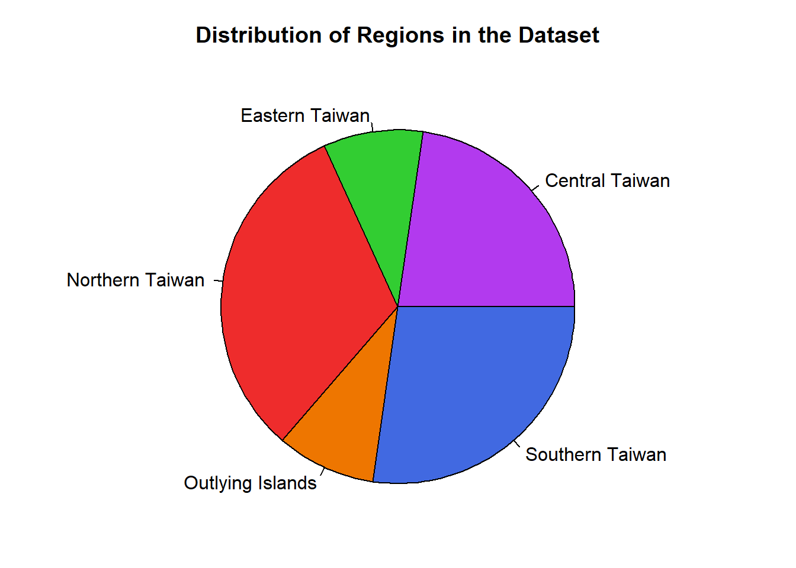
par(mar=c(5.1, 4.1, 4.1, 2.1), col="black", fg="black", col.axis="black")d. Boxplot
# Boxplot
par(mar=c(4.5, 6, 3, 2.1),las = 1)
boxplot(
A_Age ~ Region, # Y軸是N_Incidence，X軸是Divisions
data = TWBC2021, # 數據來源
main = "Boxplot of N_Incidence by Divisions", # 圖表標題
xlab = "Region", # X軸標籤
ylab = "Averge Incidence Age" , # Y軸標籤
cex.axis = 0.6
)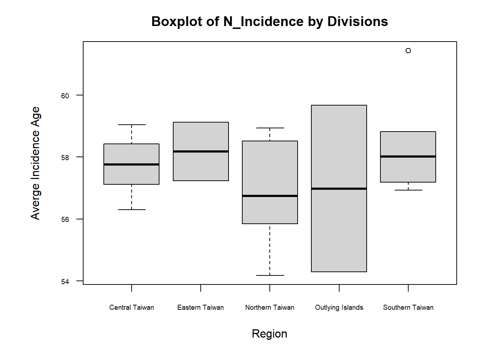
par(mar=c(5.1, 4.1, 4.1, 2.1), col="black", fg="black", col.axis="black")e. Scatterplot
# Scatterplot
par(las=1, mar=c(6, 6, 4, 4), cex= .7)
plot.new()
plot.window(range(TWBC2021$N_Incidence, na.rm = TRUE), range(TWBC2021$N_Deaths, na.rm = TRUE))
TWBC2021 <- TWBC2021[order(TWBC2021$N_Incidence), ]
lines(TWBC2021$N_Incidence, TWBC2021$N_Deaths, col="gray50")
points(TWBC2021$N_Incidence, TWBC2021$N_Deaths, pch=21, bg="white", cex=1)
par(col="gray50", fg="gray50", col.axis="gray50")
box(bty="o")
axis(1, at = NULL, labels = TRUE)
axis(2, at = seq(0, 500, 100))
axis(4, at = seq(0, 500, 100))
mtext("Number of Incidence", side=1, line=3, outer=FALSE, col="black", cex=0.8)
mtext("Number of Deaths", side=2, line=3, las=0, outer=FALSE, col="black", cex=0.8)
text(750, 400, "Number of Incidence\n vs Deaths")
title(main = "Number of Incidence versus Number of Deaths")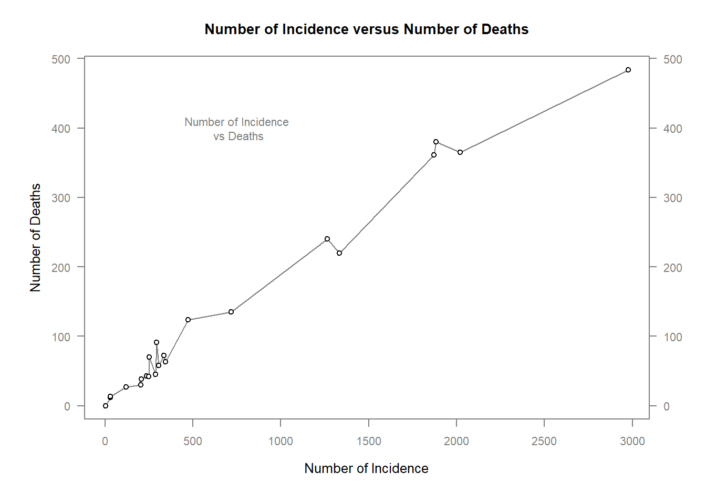
par(mar=c(5.1, 4.1, 4.1, 2.1), col="black", fg="black", col.axis="black")2. Repeat 1 using ggplot2, with your own style.
# 設置 CRAN 鏡像
options(repos = c(CRAN = "https://cran.rstudio.com/"))
# 安裝 ggplot2（若尚未安裝）
install.packages("ggplot2")Installing package into 'C:/Users/USER/AppData/Local/R/win-library/4.4'
(as 'lib' is unspecified)package 'ggplot2' successfully unpacked and MD5 sums checked
The downloaded binary packages are in
C:\Users\USER\AppData\Local\Temp\RtmpOepelc\downloaded_packages# 載入 ggplot2 套件
library(ggplot2)
# 安裝 dplyr（若尚未安裝）
install.packages("dplyr")Installing package into 'C:/Users/USER/AppData/Local/R/win-library/4.4'
(as 'lib' is unspecified)package 'dplyr' successfully unpacked and MD5 sums checkedWarning: cannot remove prior installation of package 'dplyr'Warning in file.copy(savedcopy, lib, recursive = TRUE): problem copying
C:\Users\USER\AppData\Local\R\win-library\4.4\00LOCK\dplyr\libs\x64\dplyr.dll
to C:\Users\USER\AppData\Local\R\win-library\4.4\dplyr\libs\x64\dplyr.dll:
Permission deniedWarning: restored 'dplyr'
The downloaded binary packages are in
C:\Users\USER\AppData\Local\Temp\RtmpOepelc\downloaded_packages# 載入 dplyr 套件
library(dplyr)
Attaching package: 'dplyr'The following objects are masked from 'package:stats':
filter, lagThe following objects are masked from 'package:base':
intersect, setdiff, setequal, union# 1. Histogram
ggplot(TWBC2021, aes(x = A_Age)) +
geom_histogram(aes(y = ..density..), bins = 10, fill = "gray80", color = "gray50") +
stat_function(fun = dnorm, args = list(mean = mean(TWBC2021$A_Age, na.rm = TRUE),
sd = sd(TWBC2021$A_Age, na.rm = TRUE)),
color = "red", size = 1) +
labs(title = "Histogram of Average Incidence Age of Female Breast Cancer\nwith Normal Distribution",
x = "Average Incidence Age", y = "Density") +
theme_minimal() +
theme(plot.title = element_text(hjust = 0.5))Warning: Using `size` aesthetic for lines was deprecated in ggplot2 3.4.0.
ℹ Please use `linewidth` instead.Warning: The dot-dot notation (`..density..`) was deprecated in ggplot2 3.4.0.
ℹ Please use `after_stat(density)` instead.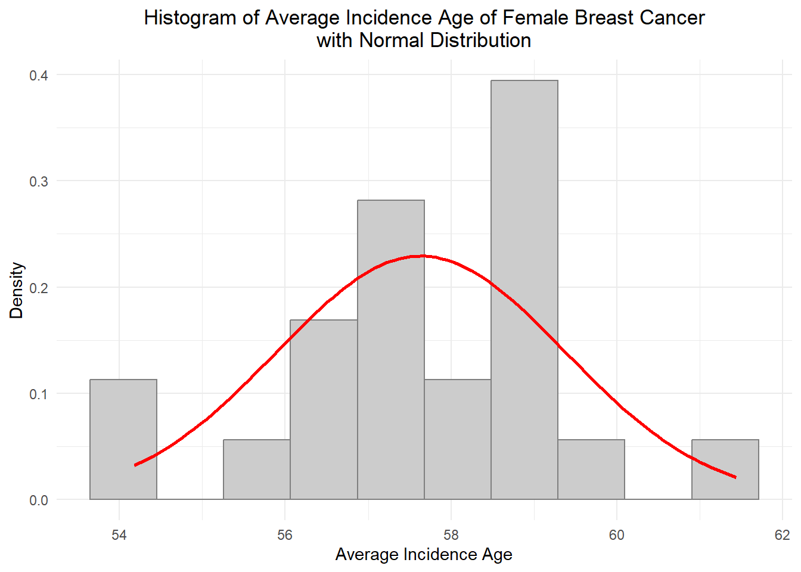
# 2. Barchart (Vertical)
sorted_data <- TWBC2021 %>% arrange(N_Incidence)
sorted_data <- TWBC2021 %>% arrange(N_Incidence)
ggplot(sorted_data, aes(x = reorder(City, N_Incidence), y = N_Incidence)) +
geom_bar(stat = "identity", fill = "lightblue") +
labs(title = "Number of Incidence by City/County", x = "City", y = "Number of Incidence") +
theme(
axis.text.x = element_text(angle = 90, hjust = 1, size = 8),
panel.background = element_rect(fill = "transparent", color = NA), # 讓繪圖區背景透明
plot.background = element_rect(fill = "transparent", color = NA), # 讓整體背景透明
panel.grid.major = element_line(color = "gray90"), # 保留主要格線
panel.grid.minor = element_line(color = "gray90"), # 保留次要格線
plot.title = element_text(hjust = 0.5) # 將標題置中
)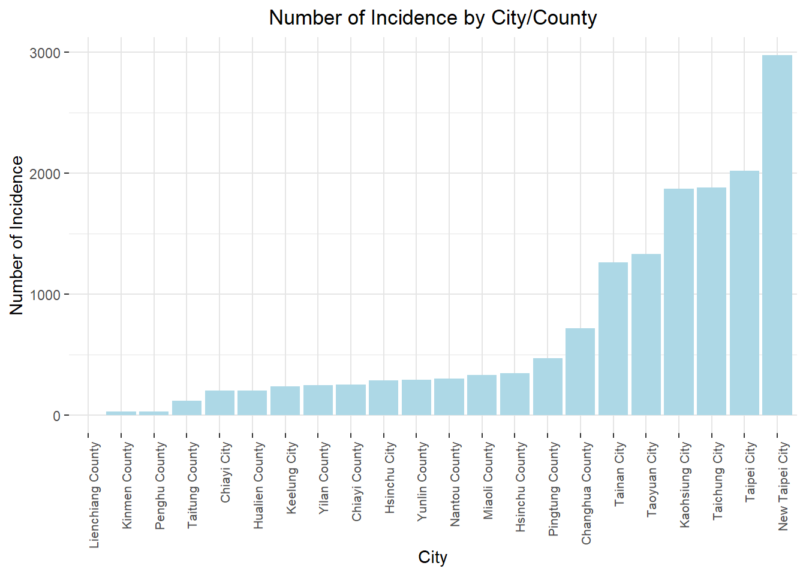
# 3. Barchart (Horizontal)
ggplot(sorted_data, aes(x = reorder(City, N_Incidence), y = N_Incidence)) +
geom_bar(stat = "identity", fill = "lightblue") +
labs(title = "Number of Incidence by City/County", y = "City", x = "Number of Incidence") +
coord_flip() +
theme_minimal() +
theme(plot.title = element_text(hjust = 0.5))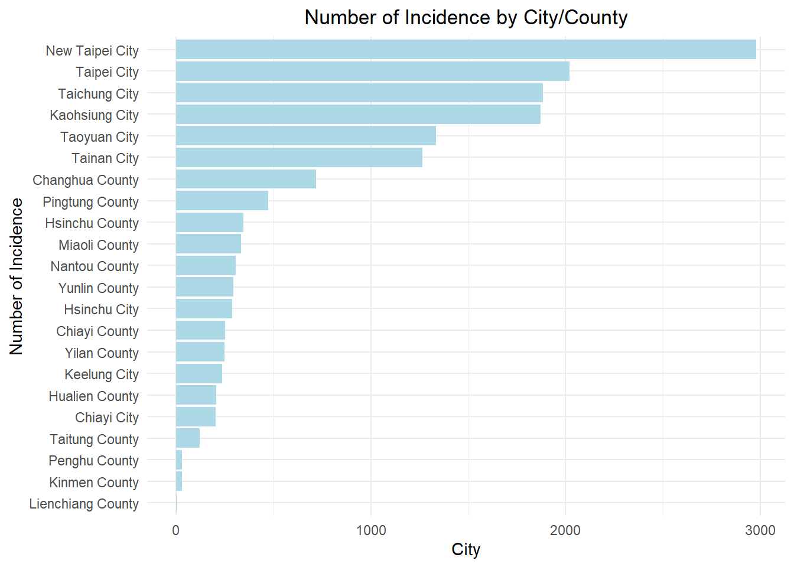
# 4. Piechart
region_counts <- TWBC2021 %>%
count(Region)
ggplot(region_counts, aes(x = "", y = n, fill = Region)) +
geom_bar(stat = "identity", width = 1) +
coord_polar(theta = "y") +
labs(title = "Distribution of Regions in the Dataset", x = NULL, y = NULL) +
theme_void() +
scale_fill_manual(values = c("darkorchid2", "limegreen", "firebrick2", "darkorange2", "royalblue")) +
theme(plot.title = element_text(hjust = 0.5))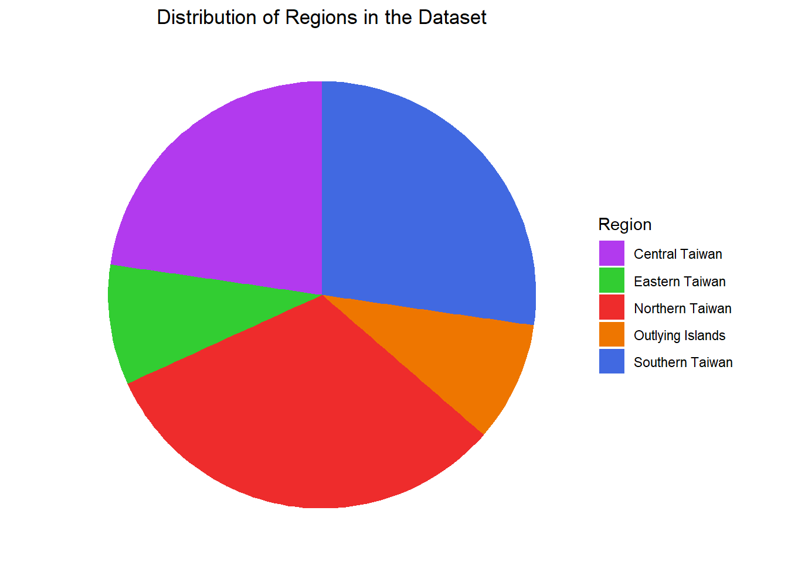
# 5. Boxplot
ggplot(TWBC2021, aes(x = Region, y = A_Age)) +
geom_boxplot(fill = "gray") + # 將盒子的顏色設為灰色
labs(title = "Boxplot of Average Incidence Age by Region", x = "Region", y = "Average Incidence Age") +
theme_minimal() +
theme(plot.title = element_text(hjust = 0.5))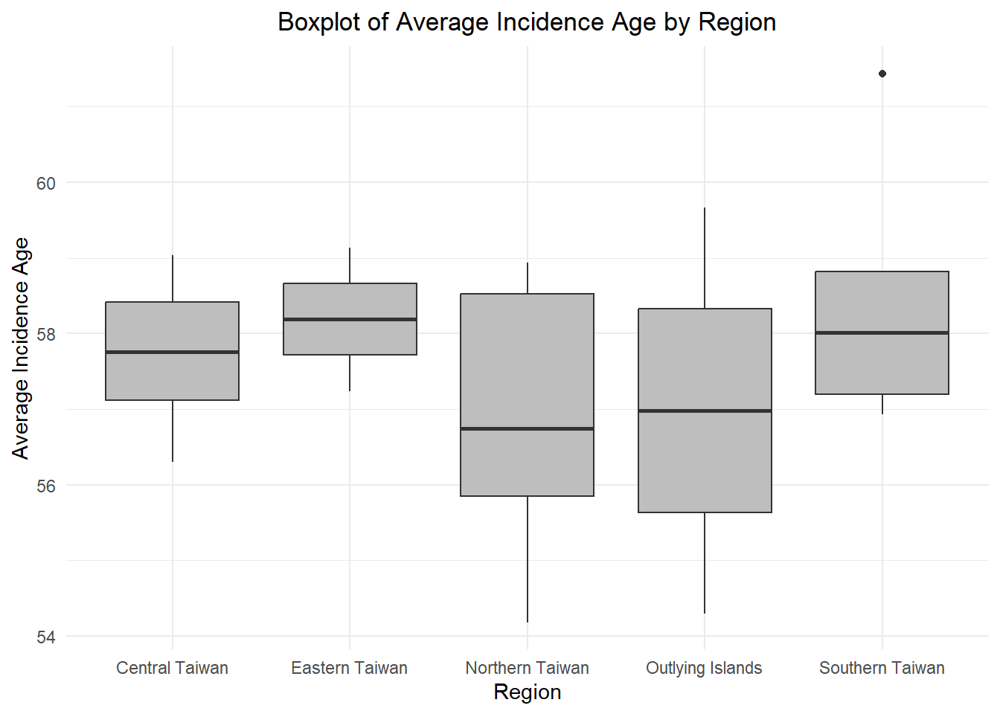
# 6. Scatterplot
ggplot(TWBC2021, aes(x = N_Incidence, y = N_Deaths)) +
geom_point(shape = 21, fill = "white", size = 3) +
geom_line(color = "gray50") +
labs(title = "Number of Incidence vs Number of Deaths", x = "Number of Incidence", y = "Number of Deaths") +
theme_minimal() +
theme(plot.title = element_text(hjust = 0.5)) + # 將標題置中
annotate("text", x = 750, y = 400, label = "Number of Incidence\n vs Deaths")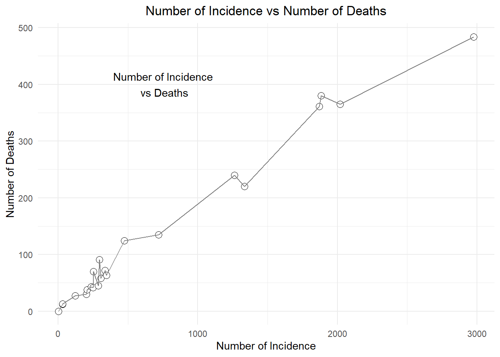
3. Export the charts using different formats such as:
- .jpg
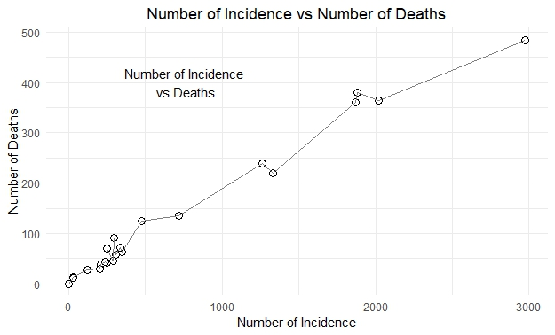
- .svg
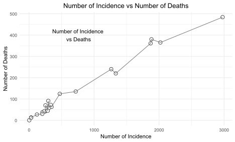
- .tiff
- .bmg
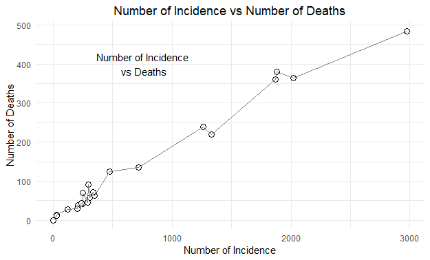
Note the differences in these file format.